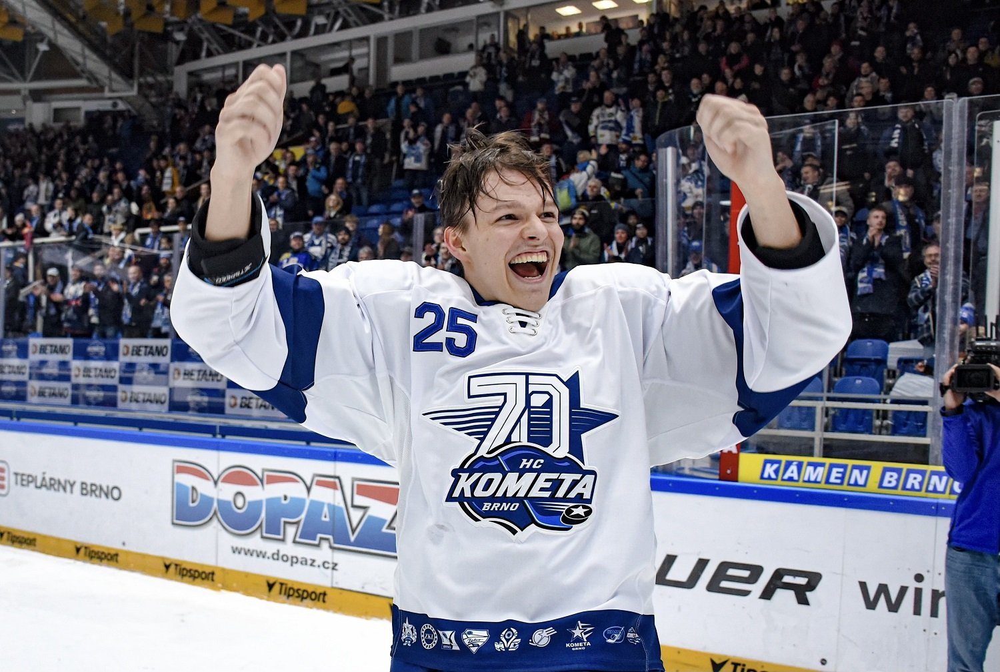

Napsala: Anet Jelínková
Datum: 20.4.2026
Vedení hokejové Komety Brno zahájilo přípravy na nadcházející sezónu ohlášením plánovaných změn v hráčském kádru. S blížícím se otevřením přestupového trhu (1. května) klub oficiálně potvrdil jména hráčů, kteří v týmu končí. Modrobílé barvy už v příští sezóně neobléknou brankář Gašper Krošelj, obránci Rhett Holland, Tomáš Bartejs, Marek Ďaloga a útočníci Šimon Stránský, Radim Ferda a Jakub Kos. Zmiňovaný útočník Jakub Kos, brněnský odchovanec, který v Kometě strávil poslední tři sezóny a celkem si připsal 39 kanadských bodů, se přesouvá do týmu HC Olomouc. O budoucím angažmá ostatních odcházejících hráčů zatím nebyla žádná zmínka. Vedení brněnského klubu všem hokejistům poděkovalo za jejich dosavadní práci pro tým a popřálo jim mnoho štěstí a úspěchů v jejich dalším profesionálním i osobním životě.

Zdroj: Oficiální Instagram @hckometa